Collecting Metrics¶
Check Status of Agent¶
- Check status of Datadog Agent
vagrant@vagrant:~$ sudo service datadog-agent status

Check to see if there is activity being displayed in a web-dashboard
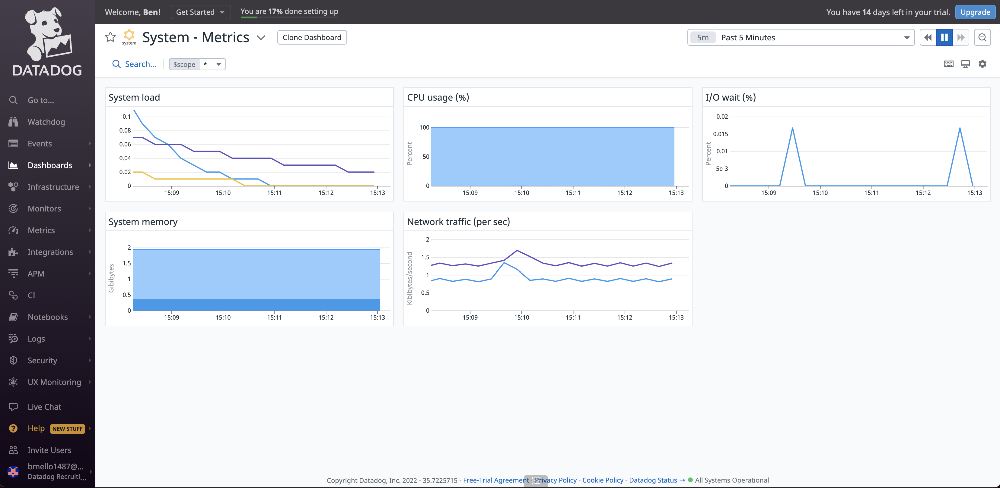
Adding Host Tags¶
There are several ways to setup tags within the Datadog Platform. I decided to set them up via the agent configuration files as guided in the challenge’s instructions.
Note
You can assign tags through the configuration files, the Datadog site (UI), Datadog’s API, and DogStatsD
Open the Agent’s main configuration file
vagrant@vagrant:~$ sudo vim /etc/datadog-agent/datadog.yaml

Note
Make sure the API key looks correct and that the agent is pointing to the correct Datadog site
I created a custom hostname in this file and set it to:
hostname:BMELLOI then added the host tags in the same configuration file
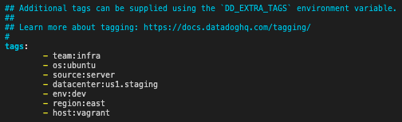
Note
Make sure you have the correct indentation in the datadog.yaml (configuration) file. I ran into this issue and the Datadog Agent would not restart.
Restart Datadog Agent:
vagrant@vagrant:~$ sudo service datadog-agent restartYou should now see your host and its’ associated tags on the Host Map page in Datadog
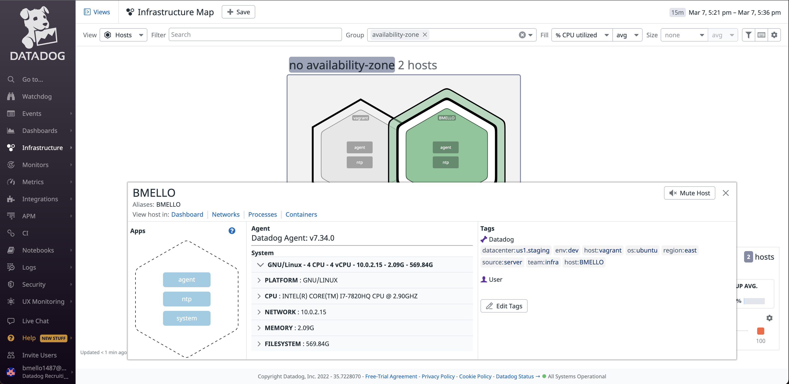
- 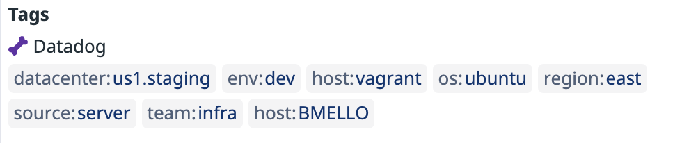
Database Installation (MySQL)¶
Install MySQL Server on Ubuntu VM
vagrant@vagrant:~$ sudo apt install mysql-server

Configure MySQL
Run the included security script for MySQL as this will change some of the less secure default options for things like remote root logins and sample users. Even though this is a test environment, we do not want it becoming vulnerable running insecure services.
vagrant@vagrant:~$ sudo mysql_secure_installation
- 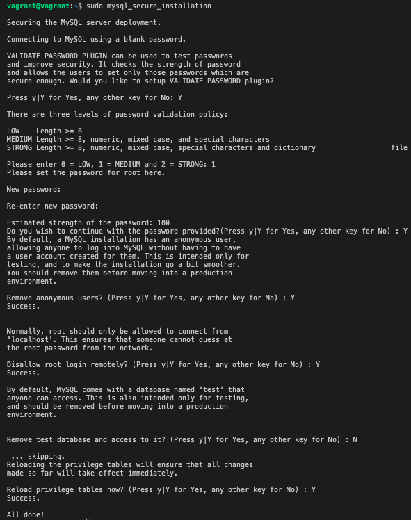
Note
As you can see in the image above, I left the test database in place so I have data to query when instrumenting with Datadog.
Check Status of MySQL to make sure it is up and running
vagrant@vagrant:~$ sudo service mysql status
- 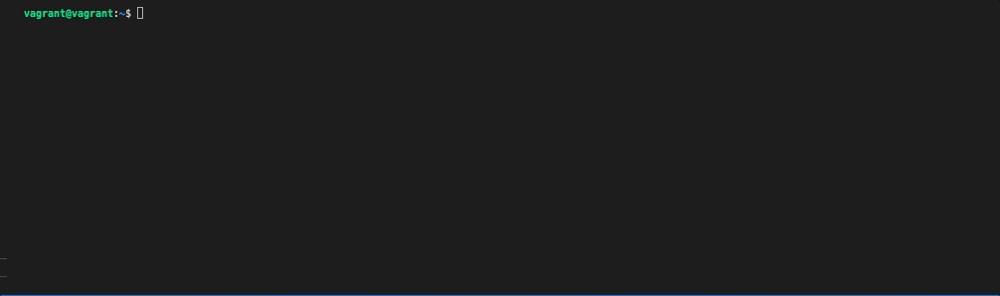
Add user to MySQL for Datadog¶
Change to MySQL shell
vagrant@vagrant:~$ mysql -u root -p
- 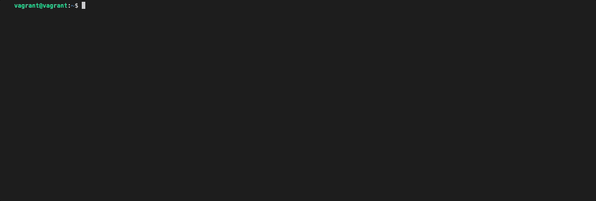
Add Datadog user
mysql > CREATE USER 'datadog'@'%' IDENTIFIED BY '<UNIQUEPASSWORD>';
- 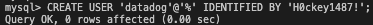
Note
Check to see what version of MySQL you are running as the scripts are different for adding a user to Datadog
- 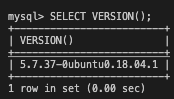
Test to make sure user was added successfuly
vagrant@vagrant:~$ mysql -u datadog --password=<UNIQUEPASSWORD> -e "show status" | \ grep Uptime && echo -e "\033[0;32mMySQL user - OK\033[0m" || \ echo -e "\033[0;31mCannot connect to MySQL\033[0m"
- 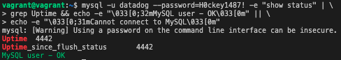
Add privileges to the user so the Agent can collect metrics
mysql> GRANT REPLICATION CLIENT ON *.* TO 'datadog'@'%' WITH MAX_USER_CONNECTIONS 5;
- 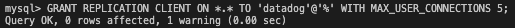
mysql> GRANT PROCESS ON *.* TO 'datadog'@'%';
- 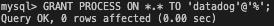
To collect additional metrics, enable
performance_schema
mysql> GRANT SELECT ON performance_schema.* TO 'datadog'@'%';
- 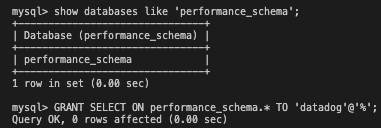
Reload the grant tables in the MySQL database so the privilges granted to the user can take effect wihtout reloading or restarting the MySQL service.
mysql> FLUSH PRIVILEGES;
Check to make sure privilges were added to Datadog user
mysql> show grants for 'datadog'@'%';
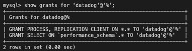
Add MySQL Configuration to Datadog Agent¶
Add configuration block to the
mysql.d/conf.yamlfile to collect the MySQL metrics
vagrant@vagrant:~$ sudo vim /etc/datadog-agent/conf.d/mysql.d/conf.yaml
- 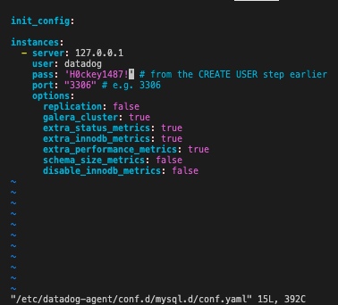
Note
Wrap your password in single quotes in case a special character is present
Restart the Agent to start sending MySQL metrics to Datadog:
vagrant@vagrant:~$ sudo service datadog-agent restart
Make MySQL logs more accessible - Edit
/etc/mysql/conf.d/mysqld_safe_syslog.cnfand remove or comment the lines.
Edit
/etc/mysql/my.cnfand add following lines to enable general, error, and slow query logs
[mysqld_safe] log_error = /var/log/mysql/mysql_error.log [mysqld] general_log = on general_log_file = /var/log/mysql/mysql.log log_error = /var/log/mysql/mysql_error.log slow_query_log = on slow_query_log_file = /var/log/mysql/mysql_slow.log long_query_time = 2
Restart MySQL:
sudo service mysql restart
Make sure Agent has read access on
var/log/mysql
6. In /etc/logrotate.d/mysql-server there should be something similar to:
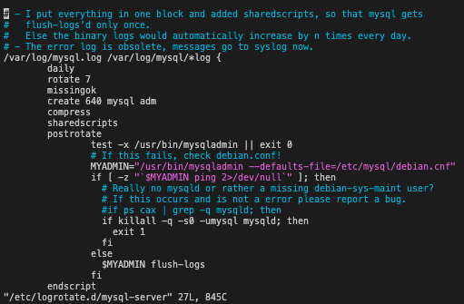
7. Enable Log Collection in the Agent’s datadog.yaml file
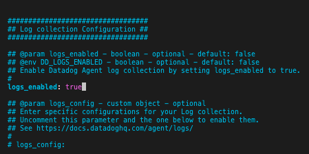
8. Add Configuration block to the /etc/datadog-agent/conf.d/mysql.d/conf.yaml file to start collecting MySQL logs
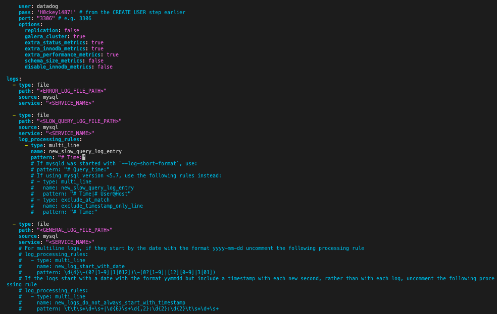
Restart the Agent:
vagrant@vagrant:~$ sudo service datadog-agent restart
Check MySQL Integration in Datadog UI¶
1. Datadog UI now recognizes the MySQL Integration
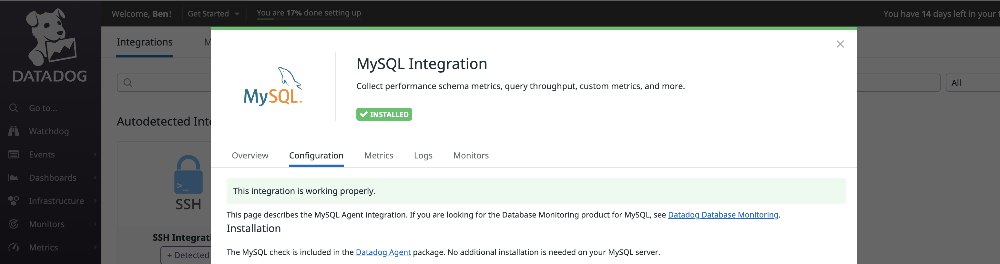
2. The Host Map now shows MySQL with Metrics and a Status Check
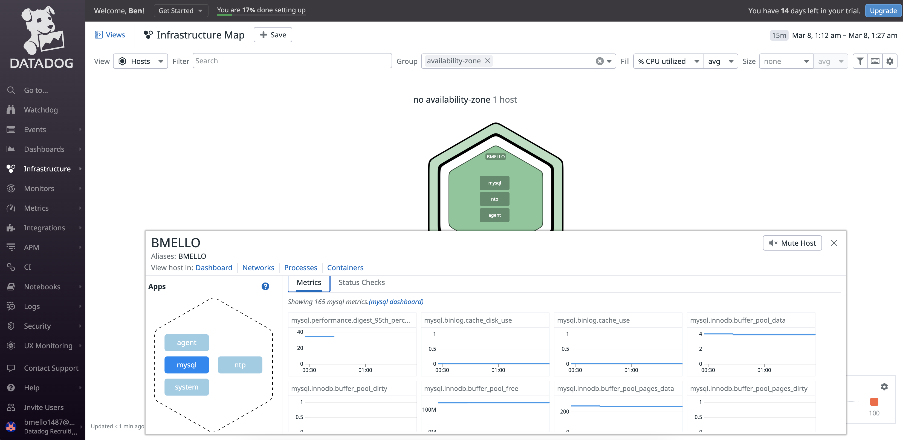
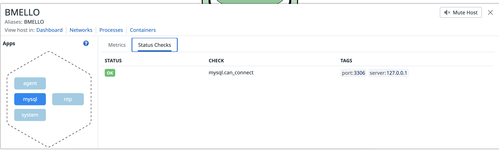
3. MySQL Overview Dashboard
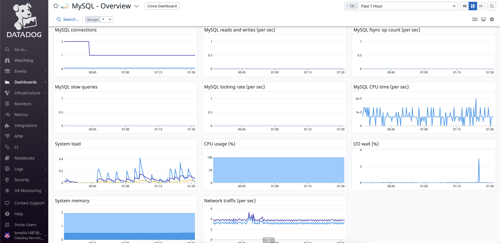
Create Custom Agent Check¶
1. Change to the conf.d directory of the Datadog Agent and create a new config file for the custom Agent check
vagrant@vagrant:~$ sudo vim /etc/datadog-agent/conf.d/custom_my_metric_check.yaml
2. Edit the custom_my_metric_check.yaml file to include the config
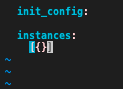
3. Create a new Python Check file my_metric in the checks.d directory of the Agent
vagrant@vagrant:~$ sudo vim /etc/datadog-agent/checks.d/custom_my_metric_check.py
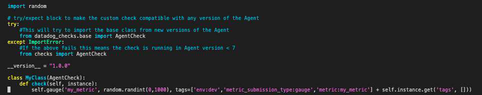
Restart the Agent:
vagrant@vagrant:~$ sudo service datadog-agent restart
Note
The names of the configuration and check files must match. If your check is called
custom_my_metric_check.pythe configuration file must be namecustom_my_metric_check.yaml
Change back to the
sudo vim /etc/datadog-agent/conf.d/custom_my_metric_check.yamlfile and edit themin_collection_intervalto 45 seconds.
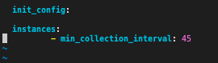
Verify that your check is running
sudo -u dd-agent -- datadog-agent check custom_my_metric_check
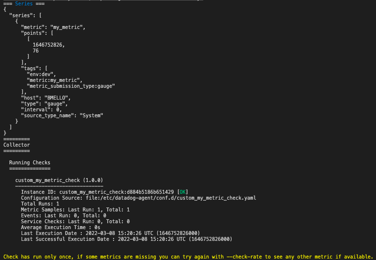
7. You will now see the my_metric graph show up in the Metrics Explorer
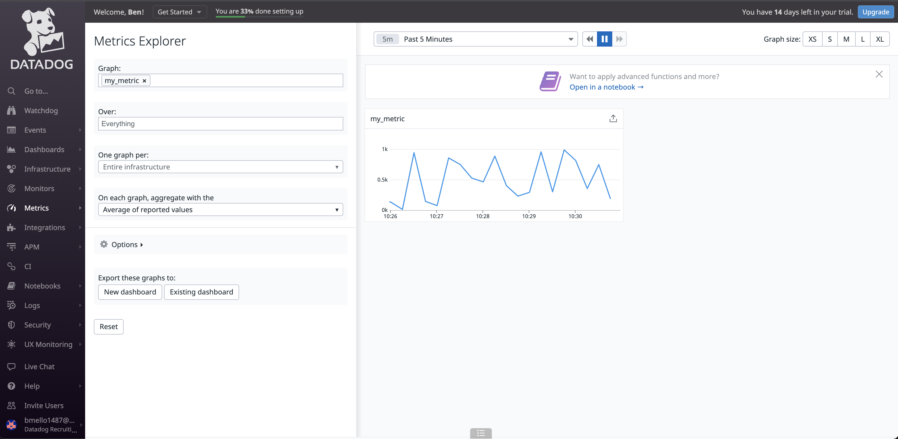
Bonus : It is possible to change the collection interval through the configuration file created in /etc/datadog-agent/conf.d/custom_my_metric_check.yaml without modifying the python code. This was executed in Step 5 of this section.